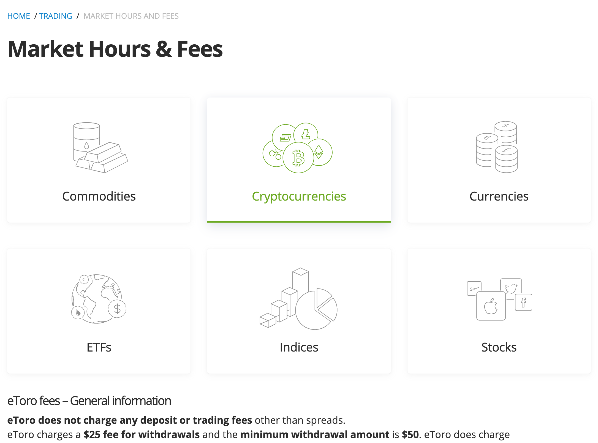
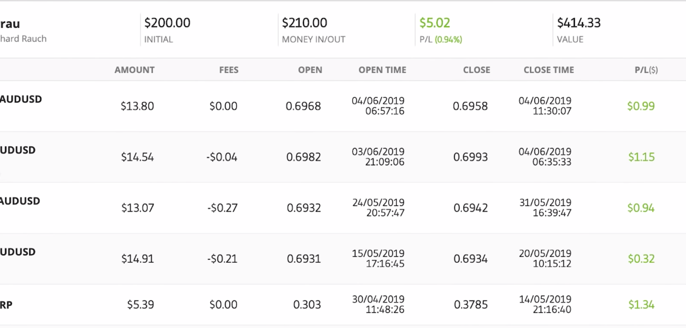
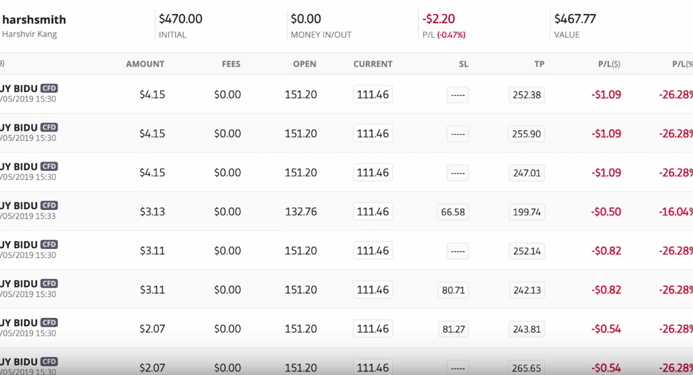

June 4, 2019 Social Trading Vlog I got promoted to 'Rising star' level Popular Investor 🙂
I've got the yellow star from eToro, and I'm now a 'Rising Star' in their PI program. Nice. So how did that happen?
Well, as part of the eToro Popular Investor Program, I can rise up through the levels and get better benefits. Anyone who joins the program can. Signing up's easy - just have a look at that page above, and it'll explain everything.
Basically, I managed to get $40K AUM (assets under management) and I'd fulfilled all the other requirements. As soon as that was the case, I got promoted to the next level.
The yellow star shows you're a 'rising star' level PI. What perks do I get?
Well, I'll now be getting a $500 payment directly from eToro each month, for as long as I stay at this level. That's great 🙂
I also don't get charged any withdrawal fees when I take money out of eToro. Very nice...
Can you lose your star again?
I'm not sure yet, but I think so yes. I need to stay above the required level to keep my current status, or rise further to get to the next.
What's the next level of Popular Investor ?
The next level would be the red star - the 'Champion Level' Popular Investor .
Once you're at 'Champion' level you'll have a red star. Back to to my Copy Trading Adventures
Things are going pretty well in the portoflio actually. I'll go through them and talk about what's been happening.
I'm a bit concerned about Alnayef's fees, and Berrau has just entered into a slightly scary forex trade. Kela-Leo seems to still be up a little, down a little. The others are pretty much the same as last time...
Alnayef and his trading fees
The thing about Alnayef is that he may not be paying overnight and weekend fees . I hear reports that 'Islamic' accounts on eToro, are exempt from these fees for religious reasons.
But the non-Islamic-account people copying these traders aren't exempt. That has set up a bit of a difficult situation around profitability as far as I can see. Now there may be some other charge which the Islamic-account folks are being charged, which I'm not.
I'm not sure whether it balances out over the long run, and it's all just named differently. Could easily be - companies always want to make their profits...
But, from what I can see, there's no time factor in Alanayef's trades, whereas the clock's ticking for me.
What are Overnight and Weekend Fees?
In case you don't know what overnight and weekend fees are, I'll explain briefly. ( Here's the eToro page ) When you make a trade either:
You'll be charged overnight fees for every day you have that trade open from one day to the next.
'Weekend' fees are just multiple 'overnight fees' added together to account for the weekend.
They're tiny amounts - calculated based on how many units of the asset you're holding. Over time though, these little charges can start to stack up... If you're paying these, it makes you very conscious of time. How long will you be keeping this trade open?
Is it worth it with those fees racking up?
If you're not paying these fees, your whole attitude to time will change. Who cares how long the trade stays open? It may be losing now, but in a few months it will turn around and I'll be in profit. What's the problem?
The problem is that I'm copying you, and you're not paying these fees, but I am. So, when you think about what profit you're going to make, you don't take these fees into account.
I, however, am paying these fees. So you may say "Look I've made profit" when you close the trade, and I may be at a loss. For the same trade. Not so good.
Will I keep Copying Alnayef's trades?
For now, yes. In the past, the fees on each trade have only made up a very small proportion of the overall trade. It's only now that the problem is starting to be noticeable.
He's got caught in some trades which are running against market trends. He sees a currency strengthening, and it's been weakening.
The forex markets seem to be moved by large macro-economic factors. This means that some trends can last for quite a while. As long as that trend lasts, and Alanayef is on the wrong side of it, the trades will stay open. That means the fees have added up and are now a noticeable proportion of those specific trades.
But, I'll keep copying him. He's been a good, consistent, low-risk trader, so I'll wait and see how things develop. I'm watching more and more closely though.
How did Olivier Danvel do with Cost averaging?
Very well! If you remember last time, I talked about how Olivier was buying multiple lots on the same forex pair.
His strategy paid off and he ended May in good profit.
Olivier's kept his unbroken record of green stats. It's very impressive 🙂
Berrau's Tricky Forex Trade
Berrau's been doing well, but he's dropped down in profit this month. It's due to a specific Forex trade on the AUD/USD pair. He opened a 'Sell' trade on the pair. Unfortunately, the Australian Dollar (AUD) actually started to strengthen against the U.S Dollar (USD). So, he started losing money...
He's kept the trade open, and it has continued to drawdown, but all's not lost!
He has also been trading shorter-term buy and sell trades on the AUD/USD which have been making him some profit back.
I'll continue to watch and see how he deals with this drawdown on that specific trade. What if it reaches 100% loss (on that trade)? Will he extend the stop loss beyond 100% or close it? I don't know, so I'm waiting to see what decision he makes.
Other than that, he's been doing well. I'm always very interested to see how traders I'm copying deal with adverse / unexpected situations. To be honest, I'm always either gaining or losing trust in them.
I'm looking for people where I can just stop watching at times, trusting they'll make the right call. Let's see how it turns out...
Kela-Leo - How's he trading?
Again, Kela-Leo hasn't really been doing much. He's gone up a little, then down a little, then up a little, down a little. Not a lot going on.
He has been trading, but the wins and losses are pretty much balancing each other out. His risk is still low - he's still in line with my risk goals for the portfolio. I'm just continuing to wait really, and see what he does.
Hedging within the portfolio
I actually have a strange situation with Kela-Leo and some of my other traders. Some are buying GBP/USD, and some are selling 🙂 This is happeneing with a few different forex pairs right now. Some of my traders are betting against some of my other traders.
Bit of a weird one to watch, but it's also keeping the portfolio quite safe in a way. If they were all trading the same asset in the same direction, I may be exposed to too much risk... It's be like having too many eggs in one basket. At least this way, my exposure to risk is lowered. Hopefully, the maths work out in the end, and I come out in profit 🙂
Harshsmith and the Baidu trade
So, just after I started copying Harshsmith, a company he is invested in called Baidu had it's earnings report. The earnings missed expectations, and the stock fell. It's just bad timing. So last week, Harshsmith was down more, but it's coming back slowly.
For now, a lot of the trades are still in red, but they're moving back in the right direction.
He only uses a small proportion of his account size on each trade though, so overall it hasn't made a huge difference...
He's only down a fraction even though this trade looks really bad. His long/short portfolio system means that he's hedged against big market moves. If some go down, others go up and vice versa. Balancing that and making sure it's overall profitable is his skill.
I, of course, will wait and watch as he tuns it around. I'm glad to be finally copying Harshsmith! It took a while to get the funds together due to the minimum trade size issue 🙂
Want to see my current eToro statistics? View my profile on eToro →